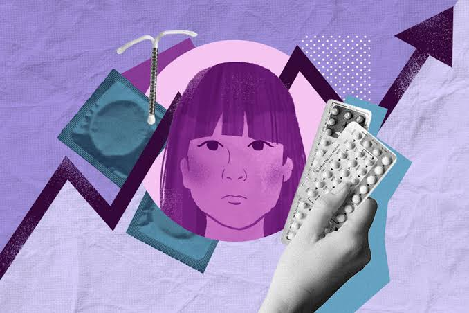

Derechos y proyecto de vida
Derechos
Los jóvenes tienen derecho a:
- Información veraz y científica: Recibir educación sobre salud, prevención y sexualidad sin prejuicios.
- Salud y bienestar: Acceso a servicios de salud física y mental de calidad.
- Toma de decisiones libres e informadas: Decidir sobre su propio cuerpo y su vida sin presiones, violencia ni discriminación.
Proyecto de Vida
Se refiere al plan o metas que una persona se propone a corto, mediano y largo plazo (por ejemplo: estudiar una carrera, trabajar, viajar, emprender o formar una familia cuando así lo decida).
¿Cómo se relacionan ambos conceptos?
Cuando una persona conoce y ejerce sus derechos, puede tomar decisiones responsables (como cuidarse y prevenir embarazos no planificados o infecciones). Esto le permite proteger su salud y no interrumpir sus metas personales o académicas, asegurando que pueda construir el proyecto de vida que desea.
